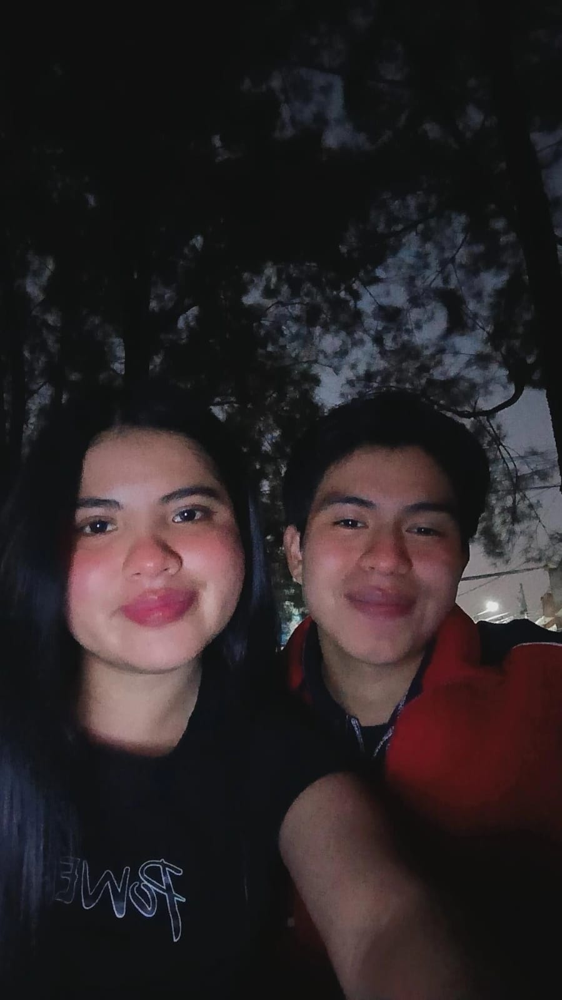
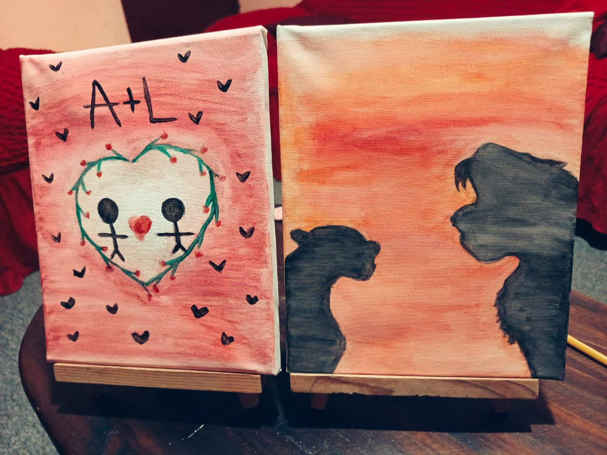

Hoy celebramos a quienes cambian el mundo con empatía, amor y compromiso.
Hay alguien muy especial que merece ver esto...
¿Qué profesión dedica su vida a ayudar a las personas y a la comunidad?
¿Quién es la mejor trabajadora social?
Hoy no solo celebramos el Día de la Trabajadora Social… hoy celebro a una mujer increíble que decidió dedicar su vida a ayudar a los demás.
Con lo que me has contado, sé el esfuerzo tan grande que hiciste para llegar hasta aquí. Sé que no fue fácil… salir de tu casa, dejar a tu familia por un tiempo e ir a otras comunidades para ayudar a personas que te necesitaban.
Y sé lo difícil que es eso… dejar a quienes amas, salir de tu zona de confort, enfrentarte a realidades duras… pero aun así lo hiciste. No por obligación… sino por tu corazón.
Eso habla muchísimo de ti, Kimberly. De tu valentía, de tu empatía y de la persona tan hermosa que eres.
Estás construyendo algo muy grande… estás dejando huella en las personas, en las familias y en cada lugar donde llegas. Y aunque a veces no lo veas, tu trabajo cambia vidas.


Estoy muy orgulloso de ti. De todo lo que has logrado y de todo lo que te falta por lograr.
Nunca dudes de lo increíble que eres… porque yo lo veo en ti todos los días.
Gracias por ser como eres… por tu corazón, tu forma de pensar y tu manera de ayudar a los demás.
Kimberly… te quiero mucho, te amo profundamente.
Siempre voy a estar para ti, apoyándote, admirándote y caminando contigo en todo lo que venga.
Con mucho amor, tuyo… Ángel 💙